HW1 ｜ 手寫稿 → 中文版題目 修正稿
勾選題（中文版題號）：1, 2, 6, 8, 9, 10, 11, 14, 16, 17, 18, 20, 21
問題在哪？
勾選的題號是中文版題號，但手寫稿是照英文版同樣的題號去找題目寫的。兩版題目順序不同、題數也不同（例如中文版有英文版沒有的「非拋物線有效質量」與「畫能帶圖」順序不同），從第 2 題開始同號就不是同一題，所以有些題寫的是別題。 下表是逐題對照與要做的動作：
| 中文題號 | 題目內容 | 手寫稿現況 | 動作 |
|---|---|---|---|
| 1 | 矽最近鄰距離、(100)(110)(111) 面密度 | 英 1（內容相同） | 沿用 只改一處筆誤 |
| 2 | SC / FCC / 鑽石最大填充比 | 寫成英 2（鑽石晶格投影，其實是中 4） | 重寫 |
| 6 | GaAs 密度、Sn 摻雜 | 英 6（內容相同） | 沿用 |
| 8 | 非拋物線能帶有效質量 | 寫成英 8（Eq.14 推導，其實是中 9） | 重寫 |
| 9 | 推導 Eq.(14)（價電帶電洞濃度） | 手寫的「8」 | 改題號 8 → 9 |
| 10 | 由 Nv 求電洞有效質量 | 手寫的「9」 | 改題號 9 → 10，補寫 7×10¹⁸ |
| 11 | Ei 位置（77K / 300K / 100℃） | 手寫的「10」 | 改題號 10 → 11，補結論 |
| 14 | 10¹⁷ 硼矽，200 K 載子與 EF | 寫成英 14（那是中 15） | 重寫 |
| 16 | 畫 77/300/600 K 平能帶圖 | 寫成英 16（另一題） | 重寫（含圖） |
| 17 | EF 在 Ec 下 0.2 eV，求 n、p、摻雜 | 寫成英 17（另一題） | 重寫 |
| 18 | 10¹⁶ B + 8×10¹⁶ As 的 EF | 寫成英 18（Ge 題） | 重寫 |
| 20 | 磷 10¹⁵/10¹⁷/10¹⁹ 的 EF 與游離檢驗 | 英 20（內容相同） | 沿用 補 Nc |
| 21 | 77 K 中性/游離施體比 | 英 21（內容相同） | 沿用 |
手寫稿中多出來、不在勾選範圍的題：英 2 = 中 4、英 11 = 中 12、英 14 = 中 15，放在最後「備用」；英 16、17、18 在中文版沒有對應，不用交。
數值檢查：手寫稿的沿用題（1、6、9、10、11、20、21）結果我重新算過，都正確。
第 1 題 沿用
(110)，要改成 (111)。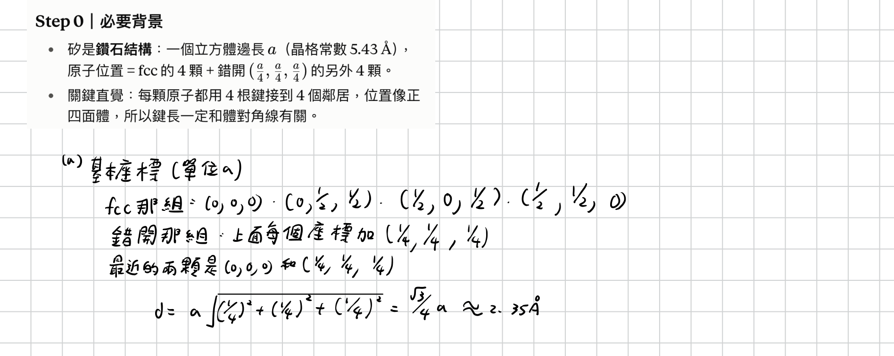
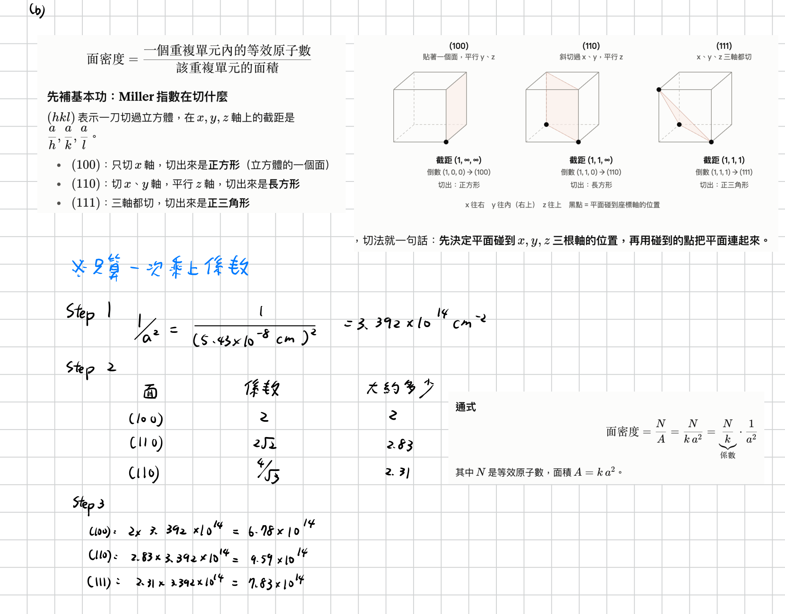
答：(a) $d=\tfrac{\sqrt3}{4}a\approx2.35\ \text{Å}$ (b) (100) $6.78\times10^{14}$、(110) $9.59\times10^{14}$、(111) $7.83\times10^{14}\ \text{cm}^{-2}$
第 2 題 重寫
填充比 $=\dfrac{\text{晶胞內原子數}\times\frac43\pi r^3}{a^3}$，硬球彼此相切決定 $r$ 與 $a$ 的關係。
簡單立方 (SC)：每胞 1 個原子，最近鄰沿邊 $2r=a$
$$f_{SC}=\frac{1\cdot\frac43\pi\left(\frac a2\right)^3}{a^3}=\frac{\pi}{6}\approx0.52$$面心立方 (FCC)：每胞 4 個原子，相切沿面對角線 $4r=\sqrt2\,a\Rightarrow r=\frac{\sqrt2}{4}a$
$$f_{FCC}=\frac{4\cdot\frac43\pi\left(\frac{\sqrt2a}{4}\right)^3}{a^3}=\frac{\sqrt2\,\pi}{6}\approx0.74$$鑽石晶格：每胞 8 個原子，最近鄰距離為體對角線的 1/4：$2r=\frac{\sqrt3}{4}a\Rightarrow r=\frac{\sqrt3}{8}a$
$$f_{D}=\frac{8\cdot\frac43\pi\left(\frac{\sqrt3a}{8}\right)^3}{a^3}=\frac{\sqrt3\,\pi}{16}\approx0.34$$答：SC $=\pi/6\approx52\%$ FCC $=\sqrt2\pi/6\approx74\%$ 鑽石 $=\sqrt3\pi/16\approx34\%$
第 6 題 沿用
課本中文版把原子量順序印成「砷、鎵 = 69.72、74.92」，實際是 Ga = 69.72、As = 74.92（英文版正確）。因為密度算式是兩者相加，結果不變，手寫稿照英文版寫 Ga、As 即可。
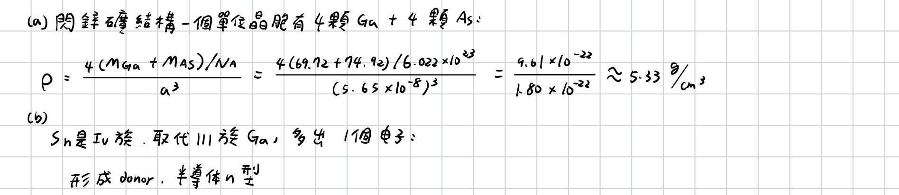
答：(a) $\rho=\dfrac{4(69.72+74.92)/6.022\times10^{23}}{(5.65\times10^{-8})^3}\approx5.33\ \text{g/cm}^3$ (b) Sn（IV 族）取代 Ga（III 族）多 1 個電子 → 施體，n 型
第 8 題 重寫
定義（$p=\hbar k$）：$\dfrac1{m^*}=\dfrac{1}{\hbar^2}\dfrac{d^2E}{dk^2}=\dfrac{d^2E}{dp^2}$
Step 1 對 $p$ 微分 $E+\alpha E^2=\dfrac{p^2}{2m_0}$：
$$(1+2\alpha E)\frac{dE}{dp}=\frac{p}{m_0}\;\Rightarrow\;\frac{dE}{dp}=\frac{p}{m_0(1+2\alpha E)}$$Step 2 再微分一次：
$$\frac{d^2E}{dp^2}=\frac{1}{m_0(1+2\alpha E)}-\frac{p\cdot2\alpha\,\frac{dE}{dp}}{m_0(1+2\alpha E)^2} =\frac{1}{m_0(1+2\alpha E)}-\frac{2\alpha p^2}{m_0^2(1+2\alpha E)^3}$$Step 3 代入 $p^2=2m_0E(1+\alpha E)$：
$$\frac{d^2E}{dp^2}=\frac{(1+2\alpha E)^2-4\alpha E(1+\alpha E)}{m_0(1+2\alpha E)^3}=\frac{1}{m_0(1+2\alpha E)^3}$$答：$m^*=m_0\,(1+2\alpha E)^3$ （α→0 時 $m^*\to m_0$）
第 9 題 改題號
建議順手加一行：$p=N_v e^{-(E_F-E_v)/kT}$ 即為 Eq.(14)，$N_v=2\left(\frac{2\pi m_p kT}{h^2}\right)^{3/2}$。
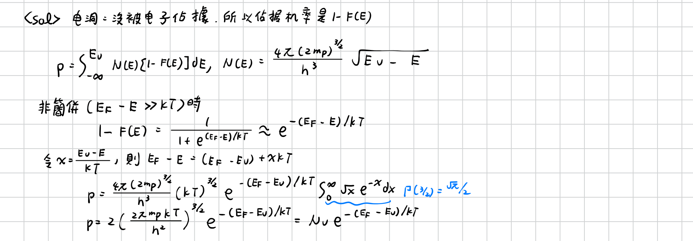
答：$p=N_v\,e^{-(E_F-E_v)/kT}$，$N_v=2\left(\dfrac{2\pi m_pkT}{h^2}\right)^{3/2}$
第 10 題 改題號
0.7，請改寫成完整的 7×10¹⁸ / 2.51×10¹⁹，避免被扣單位分。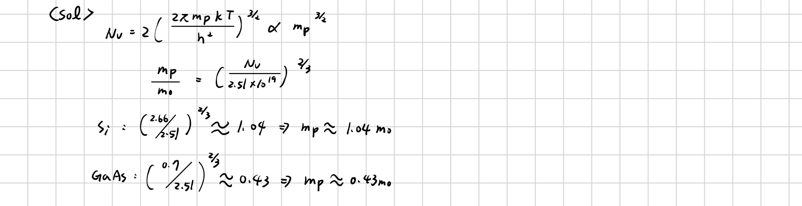
答：Si $m_p\approx1.04\,m_0$；GaAs $m_p\approx0.43\,m_0$（兩者都與 $m_0$ 同量級，Si 略大於 $m_0$）
第 11 題 改題號
並補一步推導來源：$E_i=\frac{E_c+E_v}{2}+\frac{kT}{2}\ln\frac{N_v}{N_c}=\frac{E_c+E_v}{2}+\frac34kT\ln\frac{m_p}{m_n}$。
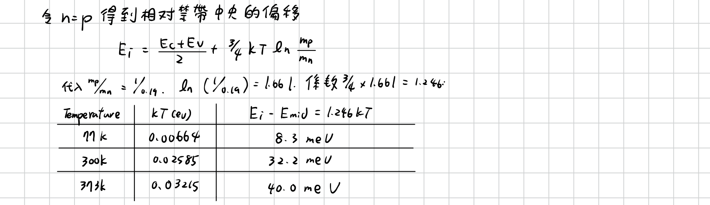
補寫的結論：偏移量 $E_i-E_{mid}=8.3,\ 32.2,\ 40.0\ \text{meV}$，皆 $\ll E_g/2\approx0.56\ \text{eV}$（最大約 7%），所以假設 $E_i$ 在能隙中央是合理的。
第 14 題 重寫
Step 1 200 K 的參數（$E_g$ 用第 7 題公式；$N_c,N_v$ 由 300 K 值乘 $(T/300)^{3/2}$）：
$$kT=0.01723\ \text{eV},\quad E_g(200)=1.17-\frac{4.73\times10^{-4}(200)^2}{200+636}=1.147\ \text{eV}$$ $$N_v=2.66\times10^{19}\left(\tfrac{200}{300}\right)^{3/2}=1.45\times10^{19},\quad N_c=1.56\times10^{19}\ \text{cm}^{-3}$$Step 2 本質載子濃度：
$$n_i=\sqrt{N_cN_v}\,e^{-E_g/2kT}=1.50\times10^{19}\,e^{-33.29}\approx5.3\times10^{4}\ \text{cm}^{-3}$$Step 3 $N_A\gg n_i$，假設完全游離：
$$p\approx N_A=1\times10^{17}\ \text{cm}^{-3},\qquad n=\frac{n_i^2}{p}=\frac{(5.3\times10^4)^2}{10^{17}}\approx2.8\times10^{-8}\ \text{cm}^{-3}$$Step 4 費米能階：
$$E_i-E_F=kT\ln\frac{p}{n_i}=0.01723\ln\frac{10^{17}}{5.3\times10^4}\approx0.487\ \text{eV}$$ $$E_F-E_v=kT\ln\frac{N_v}{p}=0.01723\ln\frac{1.45\times10^{19}}{10^{17}}\approx0.086\ \text{eV}$$答：$p\approx10^{17}$，$n\approx3\times10^{-8}\ \text{cm}^{-3}$；$E_F$ 在 $E_i$ 下方 0.487 eV（在 $E_v$ 上方約 0.086 eV）
備註：200 K 時 $E_F$ 只比硼受體能階（約 $E_v+0.045$ eV）高約 2kT，實際上受體不會 100% 游離。這題在第一章以完全游離計算即可，若老師要求可再用第 20 題的游離公式檢驗。
第 16 題 重寫（含圖）
公式：n 型、$N_D\gg n_i$ 時 $E_F-E_i=kT\ln\dfrac{n}{n_i}$；600 K 的 $n_i$ 不可忽略，用 $E_F-E_i=kT\sinh^{-1}\!\dfrac{N_D}{2n_i}$。
| T | kT (eV) | $E_g$ (eV) | $n_i$ (cm⁻³) | $E_F-E_i$ (eV) | 備註 |
|---|---|---|---|---|---|
| 77 K | 0.00664 | 1.166 | $2.5\times10^{-20}$ | ≈ +0.544 | $E_c-E_F=kT\ln\frac{N_c}{N_D}\approx0.039$，貼近 $E_c$（此溫度其實接近凍結區） |
| 300 K | 0.02585 | 1.12 | $9.65\times10^{9}$ | ≈ +0.358 | 完全游離 $n=N_D$ |
| 600 K | 0.05170 | 1.032 | $3.6\times10^{15}$ | ≈ +0.058 | 本質載子已與 $N_D$ 同量級：$n=1.1\times10^{16}$、$p=1.2\times10^{15}$，$E_F$ 趨近 $E_i$ |
圖為示意，EF 紅線高度依 $E_F-E_i$ 比例（各圖能隙高度已正規化，所以三張圖的 $E_c$、$E_v$ 畫在同高度）。
答：n 型，三個溫度下 $E_F$ 都在 $E_i$ 之上；溫度愈高 $E_F$ 愈往 $E_i$ 靠近（0.544 → 0.358 → 0.058 eV）。
第 17 題 重寫
(i) 電子： $E_c-E_F=0.20$ eV，$kT=0.02585$ eV
$$n=N_c\,e^{-(E_c-E_F)/kT}=2.86\times10^{19}\,e^{-0.20/0.02585}\approx1.25\times10^{16}\ \text{cm}^{-3}$$電洞： $E_F-E_v=E_g-0.20=0.92$ eV，用 $N_v=2.66\times10^{19}$（第 10 題）
$$p=N_v\,e^{-(E_F-E_v)/kT}=2.66\times10^{19}\,e^{-0.92/0.02585}\approx9\times10^{3}\ \text{cm}^{-3}$$若改用 $p=n_i^2/n$、$n_i=9.65\times10^9$，得 $7.5\times10^{3}$，同量級。
(ii) 摻雜： $n\gg p$ 為 n 型，電中性 $n=N_D-N_A+p\approx N_D-N_A$，沒有補償時
$$N_D\approx n\approx1.25\times10^{16}\ \text{cm}^{-3}$$答：$n\approx1.25\times10^{16}$，$p\approx9\times10^{3}\ \text{cm}^{-3}$；n 型，$N_D\approx1.25\times10^{16}\ \text{cm}^{-3}$
第 18 題 重寫
Step 1 補償摻雜，淨施體：
$$N_D-N_A=8\times10^{16}-1\times10^{16}=7\times10^{16}\ \text{cm}^{-3}\gg n_i\;\Rightarrow\;n\approx7\times10^{16}$$ $$p=\frac{n_i^2}{n}=\frac{(9.65\times10^9)^2}{7\times10^{16}}\approx1.3\times10^{3}\ \text{cm}^{-3}$$Step 2 費米能階相對 $E_i$：
$$E_F-E_i=kT\ln\frac{n}{n_i}=0.02585\ln\frac{7\times10^{16}}{9.65\times10^9}\approx0.408\ \text{eV}$$Step 3 換算到能帶邊緣（$E_i=E_g/2=0.56$ eV）：
$$E_F=E_v+0.56+0.408\approx E_v+0.97\ \text{eV},\qquad E_c-E_F\approx0.152\ \text{eV}$$用 $E_c-E_F=kT\ln(N_c/n)=0.155$ eV 驗算，兩種算法差 3 meV（來自 $n_i$ 與 $E_i$ 近似）。
答：n 型，$n\approx7\times10^{16}$，$p\approx1.3\times10^3\ \text{cm}^{-3}$；$E_F$ 在 $E_i$ 上方約 0.41 eV（距 $E_c$ 約 0.15 eV）
第 20 題 沿用
已驗算：0.265 / 0.146 / 0.027 eV 與 99.98% / 98% / 33% 都正確。10¹⁹ 時 $E_F$ 已高於 $E_D$ 且逼近 $E_c$，完全游離假設不成立（簡併，Boltzmann 近似也不再精確）。
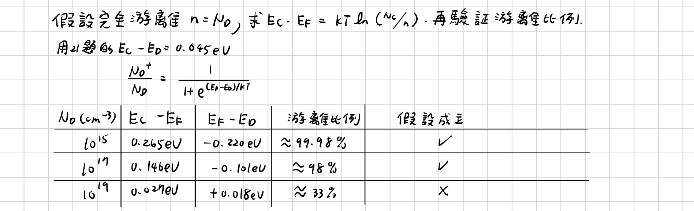
答：$E_c-E_F=0.265,\ 0.146,\ 0.027$ eV；游離比例 $99.98\%,\ 98\%,\ 33\%$；前兩者成立，$10^{19}$ 不成立
第 21 題 沿用
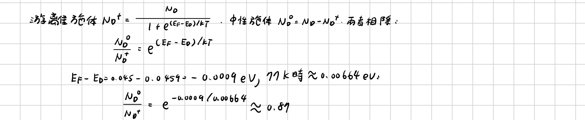
答：$\dfrac{N_D^0}{N_D^+}=e^{(E_F-E_D)/kT}=e^{-0.0009/0.00664}\approx0.87$
備用｜手寫稿中其他題（不在勾選範圍）
這三份原本寫在英文題號下，其實剛好是中文版另外三題，之後要交可直接改題號用。
中文第 4 題（手寫原標 2）改題號 2 → 4
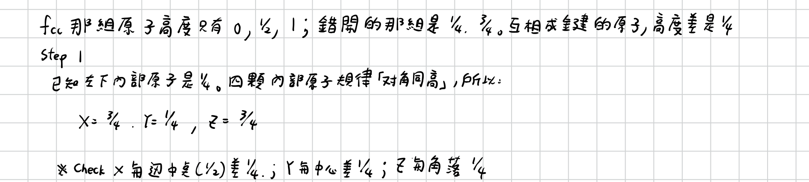
中文第 12 題（手寫原標 11）改題號 11 → 12
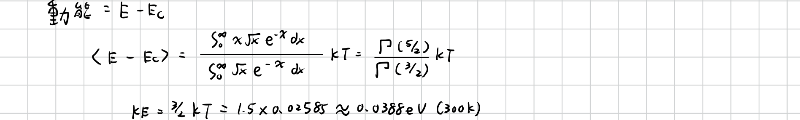
中文第 15 題（手寫原標 14）改題號 14 → 15
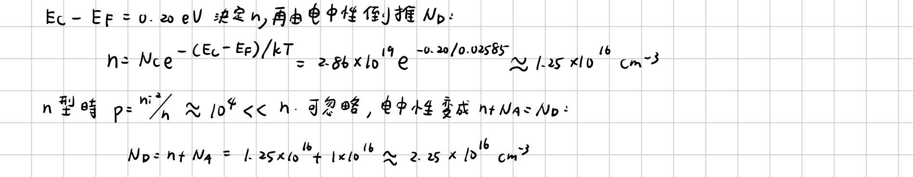